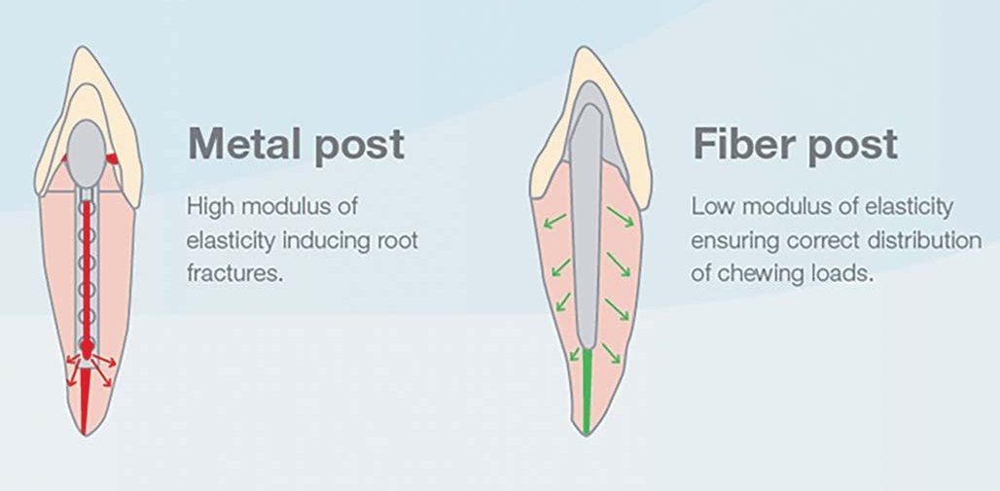
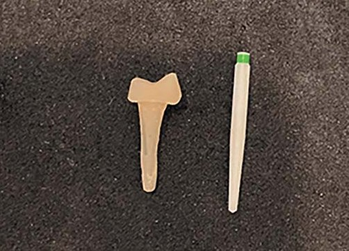

Наука · журнал «ДентАрт» 2024 №2
Постендодонтичне відновлення зубів
Post-Endodontic Teeth Restoration
Вступ
Метою стоматологічного лікування є підтримання здоров'я ротової порожнини, естетики і функції. Терапевтичні маніпуляції повинні давати передбачуваний надійний лікувальний ефект. Найпоширенішою проблемою у стоматології була і залишається каріозна хвороба та її ускладнення. Захворювання зубів та їх реставрація найчастіше ушкоджують здорову пульпу. У той же час захворювання пульпи зачіпають з'єднувальний апарат і впливають на вигляд наступної реставрації. Таким чином, ендодонтичне лікування, реставрація та періодонтальне здоров'я тісно пов'язані між собою.
Зуби, проліковані ендодонтично, можуть продовжувати функціонувати в ротовій порожнині ще тривалий час, але стикаються з підвищеним ризиком руйнування, пов'язаного з переломом,29,30 що вимагає спеціалізованих відновлювальних втручань для зміцнення існуючої структури зуба.31,32
Структура ендодонтично лікованих зубів
Papa та ін.6 не знайшли істотної різниці між вмістом вологи у вітальних та ендодонтично пролікованих зубах. Вітальний дентин містить 12,35 % вологи, тоді як дентин ендодонтично пролікованого зуба – 12,10 %. Huang та ін.7 порівняли механічні властивості вітального та девітального дентину і не виявили істотної різниці при їх компресії. Дослідження Reeh і колег8 порівняли зміни жорсткості зуба при ендодонтичних та реставраційних маніпуляціях. Відносна жорсткість зуба при ендодонтичних процедурах зменшувалася на 5 %, тоді як реставраційні процедури знижували її від 20 до 63 %. Об'ємне препарування під реставрацію веде до великої втрати тканин зуба у порівнянні з препаруванням для створення ендодонтичного доступу. Значна втрата тканин зуба, найімовірніше, є першопричиною послаблення структури ендодонтично лікованих зубів.
Також Dietschi і співавтори вважають, що цей підвищений ризик передусім пов'язаний із виснаженням твердих тканин коронкової частини зуба, таких як маргінальні гребені, перицервікальний дентин та арковий дах порожнини зуба, що викликане такими факторами, як карієс, травма або подальші ендодонтичні процедури.34
У зв'язку з цим істотний вплив на клінічний успіх ендодонтично лікованих верхньо- та нижньощелепних премолярів і молярів має реставрація типу оверлей. Вона запобігає виникненню тріщин, коли жувальний тиск спрямований у міжгорбикову зону.9 Повні коронки повинні бути використані на всіх ендодонтично лікованих бічних зубах.9,10 За наявності мінімальної кількості тканин зуба використовують штифти для утримання реставрації та майбутньої коронки.
Також успіх такого лікування і прогноз таких зубів залежать не так від якості проведених терапевтичних заходів, як від якості подальшої реставрації.35,36
Клініцист повинен зуміти відновити функцію зуба у зубному ряду, інакше весь план лікування може постраждати через ослаблений зуб. При лікуванні зубів із сумнівним прогнозом стоматолог повинен встановити довгострокову пломбу, яка запобігатиме мікропідтіканню, та/або провізорну коронку, щоб усунути ризики переломів і тріщин.
Але якщо йдеться про наявність лише ендодонтичного доступу у передніх зубах, це дозволяє відновлювати їх за допомогою реставрації. Встановлення штифта не потрібне, оскільки він не зміцнює корінь. Ретроспективні дослідження Sorrensen і Martinoff9 засвідчили, що встановлення штифта у передні зуби не покращує їх прогноз. Lovdahl і Nicolls показали, що ендодонтично проліковані центральні різці з інтактною коронкою, не враховуючи ендодонтичний доступ, були міцнішими, ніж зуби, відновлені за допомогою штифтів. Хоча великі інтерпроксимальні реставрації, переломи і тріщини ріжучого краю можуть вимагати встановлення штифтів або навіть коронки.
| Погане ендодонтичне лікування, погана реставрація | найгірший прогноз |
|---|---|
| Гарне ендодонтичне лікування, погана реставрація | ризик мікропідтікання і реінфікування |
| Погане ендодонтичне лікування, гарна реставрація | частково компенсований ризик |
| Гарне ендодонтичне лікування, гарна реставрація | найкращий довгостроковий прогноз |
У зв'язку з цим кожному клініцисту дуже важливо розуміти роль штифтів у реставрації ендодонтично лікованих зубів. Їхня ефективність залишається предметом суперечок у літературі. Деякі дослідження припускають позитивний вплив штифтів на зміцнення ETT (endodontically treated teeth),38,40 в той час як інші не можуть надати переконливих доказів на підтримку цього твердження.33,39
До появи скловолоконних штифтів (СВШ) більшість лабораторних досліджень ендодонтично лікованих зубів in vitro показали, що встановлення штифтів не підвищує стійкість зубів до переломів. Усі вони сходилися на думці, що штифти не зміцнюють структуру зуба, а лише послаблюють корінь!16,11-15 Ендодонтично проліковані зуби не повинні використовуватися як дистальна опора під мостоподібні протези з більш ніж однією проміжною одиницею, бо це з високим ступенем імовірності може призвести до їх перелому.3-5
З часом реставраційні техніки розвивалися від застосування дерев'яних штифтів у 1800-х роках до використання сучасних скловолоконних штифтів.17 Найбільш поширеним підходом до зміцнення ETT зубів з 1990-х років було використання композитних штифтів, армованих волокном (fiber-reinforced composite post – FRCP), особливо у випадках, коли спостерігається значна втрата коронкової структури зуба.33 Основна мета при використанні цих штифтів – це армування і створення додаткової ретенції для реставраційного матеріалу.
Таку популярність цей вид штифтів набув за рахунок естетичності, можливості відновлення в один візит та еластичних властивостей скловолокна.18,19

Fiber post: низький модуль еластичності забезпечує правильний розподіл жувального навантаження. Metal post: високий модуль еластичності провокує кореневі переломи.

Враховуючи сказане, можна зробити висновок, що за рахунок того, що в ендодонтично пролікованих зубах найчастіше залишається мінімальна кількість зубних структур, такі зуби повинні бути максимально відновлені за таким принципом, щоб реставрація мала умови для ретенції і не було мікропідтікання. Безліч технік та методів існує сьогодні для такого відновлення. І тому ряснішають емпіричні погляди на вибір того чи іншого методу. Клініцист повинен робити свій вибір обережно, оскільки безліч нових матеріалів не пройшли випробування у незалежних науково-дослідних лабораторіях та клінічних тестах.
Враховуючи те, що використання скловолоконних штифтів безпосередньо пов'язане з використанням адгезивних матеріалів, дуже важливою умовою для успішного виконання цього виду робіт є дотримання адгезивного протоколу і відповідна матеріально-технічна база, якою користується клініцист. Кількість матеріалів, а також комбінацій їх використання для такого виду реставрацій настільки широка і різноманітна, що легко може викликати плутанину та замішання навіть у досвідченого фахівця. Тому деякі стоматологи використовують із цією метою навіть штифти з поліетиленового волокна і стрічку зі скловолокна.20,27
Метою цієї статті є аналіз сучасної літератури та визначення оптимального протоколу роботи зі скловолоконними штифтами (СВШ).
Матеріали і методи
Для нашої роботи важливо визначити, що може вплинути на якість фіксації СВШ. Ретенція штифта залежить від:
- наявності ферула;
- довжини штифта;
- адаптації між штифтом і стінками кореня (товщини шару цементу);
- виду штифта;
- матеріалів для фіксації.
| Вибір штифта | Переваги | Недоліки | Показання | Протипоказання |
|---|---|---|---|---|
| Безштифтова реставрація | Один візит; вартість; зберігає зубні тканини; естетика | Можливість мікропідтікань | Передні зуби лише з ендодонтичним доступом або дуже маленькою порожниною класу III | Численні і об'ємні реставрації, бічні зуби у більшості випадків |
| Скловолоконні штифти | Один візит; естетика | Ослаблює корінь; можливість мікропідтікань; вартість | Усі зуби з достатньою кількістю зубних тканин | Мінімальна кількість зубних тканин |
| Металеві штифти | Міцність; незалежність від кількості зубних тканин | Ослаблює корінь і вимагає великого видалення зубних тканин; кілька візитів; неестетичні | При мінімальній кількості збережених тканин зуба; при використанні зуба як опори у мостоподібному протезі; коли потрібна особлива міцність | При встановленні суцільнокерамічних коронок |
Щодо ферула, то якщо в окружності зуб не має 1,5–2,0 мм тканин, потрібно застосувати операцію з подовження коронки зуба, ортодонтичне витягування або видалення зуба.1 Зуби, в яких неможливо дотриматися принципів ізоляції, відновлювати не варто.
Останні дослідження свідчать, що довжина штифта не має настільки великого впливу на ступінь фіксації в кореневому каналі. При введенні штифта на 1/2 або на 2/3 кореня істотних відмінностей не відзначається, причому тип штифта на це не впливає,20 а коротший штифт може навіть сприяти збереженню зуба.33
Нерівномірна товщина цементу може призвести до неадекватної передачі навантаження через корінь і зниження стабільності штифта у довгостроковому прогнозі. З цією метою рекомендують виготовляти індивідуальні СВШ. Таким чином було запропоновано вводити один «майстер-штифт» та кілька додаткових штифтів для каналів неокруглої форми. «Майстер-штифт» повинен мати точний діаметр в апікальній частині, а додаткові підганятися в середню та коронкову частини каналу.17
Коли ж ідеться про канали округлої форми, слід прислухатися до рекомендації виробника щодо калібрування штифтів і стежити, щоб штифт мав максимальну площу прилягання до дентину кореня.
І якщо зазначені вище питання суперечок та протиріч серед клініцистів і дослідників зазвичай не викликають, то останні два пункти є точкою розбіжностей, і на них слід зупинитися докладніше.
Скловолоконний штифт складається з двох основних компонентів:
- Власне скляних волокон, які можуть бути такими:
- тонкі цілісні скловолокна до 0,25 мм, що найкраще для забезпечення потрібних властивостей штифта;
- цілісні скляні волокна 0,3-0,5 мм, що не так добре, бо скло надає штифту більшої, ніж потрібно, твердості та крихкості, і не забезпечується належна еластичність;
- складаються зі скляної або керамічної крихти, що зовсім недобре, тому що робить штифти дуже крихкими і не дає блакитному світлу проникати в глибину каналу.
- Матричної смоли, яка може бути:
- композитними смолами (Bis-GMA), що дає можливість встановлення хімічного зв'язку між штифтом та адгезивом;
- епоксидними смолами або іншими компонентами, які склеюють, що значно гірше, бо встановити зазвичай можна тільки механічний зв'язок за рахунок нерівностей і ретенційних пунктів на штифті, які ще й потрібно створити, попередньо протравлюючи штифт. При обробці СВШ кислотами відбувається їх пошкодження, з'являються мікротріщини, поздовжні фрактури зовнішнього шару.17
Для покращення хімічного зв'язку штифта з цементом використовують силани, які здатні створити зв'язок між неорганічними поверхнями (скло) та полімерними. Щоб покращити зв'язок, бажано каталізувати реакцію температурою – уже силанізовані штифти кращі.17
| Силан | 21°C, Mean (SD) | 38°C, Mean (SD) |
|---|---|---|
| Porcelain Liner M | 8,8 (3,1) | 11,7 (2,7) |
| Porcelain Silane | 6,9 (2,0) | 11,6 (2,8) |
| Monobond S | 11,0 (2,9) | 11,4 (2,5) |
Що ж до матеріалів для фіксації штифта, то такі штифти мають зв'язок лише з адгезивними системами.
Сучасні адгезивні системи дотримуються двох стратегій:
- Видалення змазаного шару.
- Перетворення та утримання змазаного шару (самопротравлювальна техніка).
Усім нам ще з університетського курсу добре відомо, що проникність радикулярного дентину значно нижча, ніж коронкового, що пов'язано зі зменшенням щільності дентинних канальців приблизно від 42 000 на квадратний міліметр у пришийковому дентині до 8 000 канальців на квадратний міліметр у радикулярному дентині.2
Також у дентинно-колагеновому матриксі присутні матриксні протеїнази (ММPs) – цинк та кальційзалежні ендопептидази, які сприяють деградації колагену і, як наслідок, погіршують якість бондингу. Найкращим інгібітором є хлоргексидин – він посилює тривалість адгезії. Усі адгезиви активують MMPs навіть після інактивації ортофосфорною кислотою.17
Відповідно, техніка «видалення змазаного шару» працювати повноцінно у кореневому дентині не може. Чому багато виробників залишають у себе в рекомендаційному протоколі використання цієї техніки, залишається загадкою.
Lima RBW та автори провели дослідження того, як впливає світло і час старіння композиту подвійного затвердіння на його міцність. За результатами цього дослідження було зроблено такі висновки:
- Метод самозатвердження недостатній для того, щоб композитні цементи досягли мінімально необхідних механічних властивостей протягом 15 хвилин після змішування.
- Ослаблення світла призвело до зниження міцності на двовісний вигин полімерних цементів у короткостроковій перспективі (15 хвилин), ніж коли був застосований метод прямого затвердіння.
- Самоадгезивний полімерний цемент продемонстрував нижчі значення адгезивного зв'язку порівняно з несамоадгезивним полімерним цементом протягом більшої частини дослідження.
- Самоадгезивний цемент продемонстрував більш стабільну характеристику міцності в залежності від часу зберігання і незалежно від умов зберігання, ніж продукт, що не самозатверджується.21
| Композитний цемент | Метод засвічування | 15 хв | 24 год | 6 місяців |
|---|---|---|---|---|
| Самоадгезивний цемент (SA) | CS | – | 79,3 (12,3) | 37,4 (15,7) |
| DL | 130,1 (21,7) | 132,9 (16,3) | 113,7 (15,3) | |
| DD | 113,5 (11,6) | 131,1 (17) | 123,9 (11,8) | |
| IL | 88,1 (6,9) | 109,4 (13,4) | 101,7 (15,6) | |
| Несамоадгезивний цемент (NA) | SC | – | 67,8 (10,2) | 66,5 (15,8) |
| DL | 139,1 (18) | 153,8 (15,71) | 120,7 (24,5) | |
| DD | 115,2 (30,4) | 153,9 (25,6) | 121,6 (28,3) | |
| IL | 114,6 (16,8) | 146,8 (19,8) | 126,9 (22,6) |
Абревіатури: SC – самозатвердіння; DL – пряме засвічування; DD – засвічування з дистанції; IL – непряме засвічування.
В іншому дослідженні Ferreira та співавтори також визначили, що кількість світла на різній глибині залежить від світлопровідності штифта і глибини вимірювання. Прозорий штифт показав вищий рівень сили адгезії в об'єднаних даних.22
Вдалося також з'ясувати, що при цементуванні прозорим СВШ міцність на межі між світлотвердіючим цементом і кореневим каналом еквівалентна міцності на межі між цементом подвійного затвердіння та кореневим каналом.24
| Ділянка кореня | RelyX ARC | Tetric flow | Unicem | |||
|---|---|---|---|---|---|---|
| Корональна | 35,49 | 14,70 | 33,0 | 15,45 | 13,39 | 7,03 |
| Середня | 28,22 | 13,48 | 29,29 | 15,44 | 13,78 | 8,95 |
| Апікальна | 26,92 | 13,05 | 21,3 | 8,8 | 20,93 | 10,51 |
Значення з однаковими літерами-символами не мають значущої різниці (р > 0,05); повні позначення груп наведено в оригінальній публікації.
Статистичний аналіз засвідчив, що цемент та його старіння (12 міс.) істотно впливають на силу адгезії (push-out bond strength – PBS) (p < 0,05), але не залежать від полімеризації та зони кореня (p > 0,05). Значно нижчі PBS (p < 0,05) були виявлені для групи цементу Calibra Universal у порівнянні з іншими цементами, в той час як група RelyX Universal працювала однаково добре (p > 0,05) або краще, ніж інші цементи (p < 0,05). Загалом процес старіння збільшував крайову інфільтрацію.25
Тип цементу і доступ світла впливають на рівень міцності з'єднання між СВШ і кореневими каналами. Міцність зв'язку цементу RelyX ARC/SBMP виявилася більш залежною від фотоактивації, ніж цементу RelyX U100. Рівень кількості світла не впливав на міцність апікальної фіксації RelyX U100.28
Для досягнення максимальної міцності зчеплення із самоадгезивними цементами необхідна фотоактивація із 120-секундною затримкою після замішування. Немає різниці між світлозатвердінням відразу і світлозатвердінням через 20 секунд після змішування.26
Як виявилося, на силу адгезії може впливати навіть проведення фотодинамічної терапії.23
Висновки
Проаналізувавши згадану літературу, ми зробили такі висновки:
- Використання СВШ є чудовим методом для відновлення раніше ендодонтично лікованих зубів, але також цей метод пов'язаний з безліччю суперечок та розбіжностей.
- Вибір штифта і спосіб його фіксації відіграють ключову роль у довгостроковому прогнозі встановленої реставрації.
Враховуючи викладене, хочу запропонувати свою методику встановлення СВШ:
- Підготовка та ізоляція зуба за стандартним протоколом.
- Вибір штифта. Рекомендую використовувати пресиланізовані світлопровідні штифти (наприклад Luxapost, DMG; DT Light Post, VDW). Якщо використання пресиланізованого світлопровідного штифта неможливе, то як виняток можна використовувати світлопровідний штифт (напр. RelyX™ Fiber Post, 3М) з обов'язковою його силанізацією (10 с нанесення силанта і через 60 с висушування струменем сухого повітря).
- Розробка кореневого каналу свердлами відповідно до розміру каналу та рекомендацій виробника.
- Протравлювання кукси зуба 36 % ортофосфорною кислотою за протоколом тотального протравлювання.
- Очищення та промивання кореневого каналу хлоргексидином 2 %.
- Висушування паперовими пінами.
- Внесення 3M™ RelyX™ Unicem 2 Automix Self-Adhesive Resin Cement або 3M™ RelyX™ Universal Resin Cement (група цементів RelyX Universal подвійного затвердіння практично у всіх дослідженнях виявляла себе краще, ніж інші цементи цього типу).
- Через 120 с полімеризація цементу за допомогою ультрафіолетової лампи LED в торець штифта 3 рази по 20 с.
- Зрізання надлишків штифта за допомогою турбінного наконечника з використанням води. Висушування.
- Обробка кукси зуба адгезивом, який клініцист обрав для протоколу тотального протравлювання, та засвічування.
- Відновлення кукси зуба build-up матеріалом (напр. LuxaCore Z, DMG). Остаточна обробка кукси.
Застосування цього протоколу дозволило мені за більш ніж 10 років його використання не отримати жодного розцементування кукси. Тому цей метод роботи вважаю дуже цікавим, особливо з появою нового напряму композитів, зміцнених скляними волокнами, і переконана, що подальші дослідження у цій сфері є дуже важливими.
Література
- William T. Johnson. Color Atlas Of Endodontics. Elsevier Science Health Science Division, 2002.
- Stephen Cohen, Richard C. Burns. Pathways of the Pulp, sixth edition. St. Louis, Missouri, 1994.
- Bateman L. A. Fundamentals of fixed prosthodontics. Carol Stream, IL, 1997, Quintessence.
- Nyman S., Lindhe J. A longitudinal study of combined periodontal and prosthetic treatment of patients with advanced periodontal disease. J Periodontol 50:163, 1979.
- Sorensen J. A., Martinoff J. T. Endodontically treated teeth as abutments. J Prosthet Dent 53:631, 1985.
- Papa J., Cain C., Messer H. H. Moisture content of vital vs. endodontically treated teeth. Endod Dent Traumatol 10:91, 1994.
- Huang T. J., Schilder H., Nathanson D. Effects of moisture content and endodontic treatment on some mechanical properties of human dentin. J Endod 18:209, 1992.
- Reeh E. S., Messer H. H., Douglas W. H. Reduction in tooth stiffness as a result of endodontic and restorative procedures. J Endod 15:512, 1989.
- Sorensen J. A., Martinoff J. T. Intracoronal reinforcement and coronal coverage: a study of endodontically treated teeth. J Prosthet Dent 51:780, 1984.
- Goodacre C. J., Spolnik K. J. The prosthodontic management of endodontically treated teeth: a literature review. Part 1. J Prosthod 4:243, 1994.
- Leary J. M., Aquilino S. A., Svare C. W. An evaluation of post length within the elastic limits of dentin. J Prosthet Dent 57:277, 1987.
- Lu Y. C. A comparative study of fracture resistance of pulpless teeth. Chin Dent J 6:26, 1987.
- Guzy G. E., Nicholls J. I. In-vitro comparison of intact endodontically treated teeth with and without endo-post reinforcement. J Prosthet Dent 42:39, 1979.
- Trope M., Maltz Do., Tronstad L. Resistance to fracture of restored endodontically treated teeth. Endod Dent Traumatol 1:108, 1985.
- Turner C. H. Post-retained crown failure: a survey. Dent Update 9:221, 1982.
- Gutman J. L., Tidwell E. Restoring endodontically treated teeth. Texas Dent J 114:14, 1997.
- Ferrari M., Breshi L., Grandini S. Fiber post and Endodontically treated teeth. Modern Dentistry Media cc, 2008.
- Мацей Жаров, Камило Д'арканжело и др. Восстановление зубов после эндодонтического лечения. ЭндоПрактика, 2014.
- Le Bell-Rönnlöf A. M., Lassila L. V., Kangasniemi I., Vallittu P. K. Load-bearing capacity of human incisor restored with various fiber-reinforced composite posts. Dent Mater. 2011 Jun;27(6):e107-15.
- Thakur A., Ramarao S. A comparative evaluation of fracture resistance of endodontically treated premolar teeth reinforced with different prefabricated and custom-made fiber-reinforced post system with two different post lengths. J Conserv Dent. 2019 Jul-Aug;22(4):376-380.
- Lima RBW, Murillo-Gómez F., Sartori C. G., De Goés M. F. Effect of light absence or attenuation on biaxial flexural strength of dual-polymerized resin cements after short- and long-term storage. J Esthet Restor Dent. 2019 Jan;31(1):80-87.
- Alves Morgan L.F.D.S., Pinotti M. B., Ferreira F. M., Gomes G. M., Silva G. C., Albuquerque R. C., Moreira A. N. Influence of light transmission through fiber posts. Indian J Dent Res. 2018 Jan-Feb;29(1):74-80.
- Strazzi-Sahyon H. B., da Silva P. P., Nakao J. M., et al. Influence of two photodynamic therapy sessions and different photosensitizers on the bond strength of glass-fiber posts. Photodiagnosis Photodyn Ther. 2021 Mar;33:102193.
- Luca Giachetti, Simone Grandini, Paolo Calamai, Gabriele Fantini, Daniele Scaminaci Russo. Translucent fiber post cementation using light- and dual-curing adhesive techniques and a self-adhesive material: Push-out test. 2009;37(8):0-642.
- Josic U., Mazzitelli C., Maravic T., Comba A., Mayer-Santos E., Florenzano F., Breschi L., Mazzoni A. Evaluation of Fiber Post Adhesion to Root Dentin Achieved with Different Composite Cements. J Adhes Dent. 2022 Mar 24;24(1):95-104.
- Comba A., Baldi A., Juzikis E., Vergano E. A., Pasqualini D., Alovisi M., Berutti E., Scotti N. Does Curing Delay Affect the Bond Strength of Fiber Post with Self-Adhesive Cements? Int J Prosthodont. 2023 Nov 1;36(5):595-602.
- Sema Belli & Gürcan Eskitascioglu. Biomechanical properties and clinical use of a polyethylene fibre post-core material. International Dentistry South Africa, Vol 8, No 3.
- Daleprane B., Nemesio de Barros Pereira C, Orefice R. L., Bueno A. C., Vaz R. R., Moreira A. N., Magalhaes C. S. The Effect of Light-curing Access and Different Resin Cements on Apical Bond Strength of Fiber Posts. Operative Dentistry, 2014;39(2):e93-e100.
- Al-Omiri M. K., Mahmoud A. A., Rayyan M. R., Abu-Hammad O. Fracture resistance of teeth restored with post-retained restorations: an overview. J Endod. 2010 Sep;36(9):1439-49.
- Mohammadi N., Kahnamoii M. A., Yeganeh P. K., Navimipour E. J. Effect of fiber post and cusp coverage on fracture resistance of endodontically treated maxillary premolars directly restored with composite resin. J Endod. 2009 Oct;35(10):1428-32.
- Cecchin D., de Almeida J. F., Gomes B. P., Zaia A. A., Ferraz C. C. Effect of chlorhexidine and ethanol on the durability of the adhesion of the fiber post relined with resin composite to the root canal. J Endod. 2011 May;37(5):678-83.
- Barcellos R. R., Correia D. P., Farina A. P., Mesquita M. F., Ferraz C. C., Cecchin D. Fracture resistance of endodontically treated teeth restored with intra-radicular post: the effects of post system and dentine thickness. J Biomech. 2013 Oct 18;46(15):2572-7.
- Zicari F., Van Meerbeek B., Scotti R., Naert I. Effect of fibre post length and adhesive strategy on fracture resistance of endodontically treated teeth after fatigue loading. J Dent. 2012 Apr;40(4):312-21.
- Dietschi D., Duc O., Krejci I., Sadan A. Biomechanical considerations for the restoration of endodontically treated teeth: a systematic review of the literature--Part 1. Quintessence Int. 2007 Oct;38(9):733-43.
- Ray H. A., Trope M. Periapical status of endodontically treated teeth in relation to the technical quality of the root filling and the coronal restoration. Int. Endodontic J., 1995, 28, 12-18.
- Tronstad L., Asbjørnsen K., Døving L., Pedersen I., Eriksen H. M. Influence of coronal restorations on the periapical health of endodontically treated teeth. Endod Dent Traumatol. 2000 Oct;16(5):218-21.
- Lynch C. D., Burke F. M., Ní Ríordain R., Hannigan A. The influence of coronal restoration type on the survival of endodontically treated teeth. Eur J Prosthodont Restor Dent. 2004 Dec;12(4):171-6.
- Nothdurft F. P., Seidel E., Gebhart F., Naumann M., Motter P. J., Pospiech P. R. The fracture behavior of premolar teeth with class II cavities restored by both direct composite restorations and endodontic post systems. J Dent. 2008 Jun;36(6):444-9.
- Trope M., Maltz D. O., Tronstad L. Resistance to fracture of restored endodontically treated teeth. Endod Dent Traumatol. 1985 Jun.
- Seow L. L., Toh C. G., Wilson N. H. Strain measurements and fracture resistance of endodontically treated premolars restored with all-ceramic restorations. J Dent. 2015 Jan;43(1):126-32.